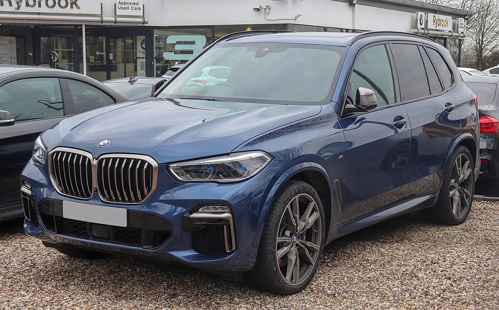
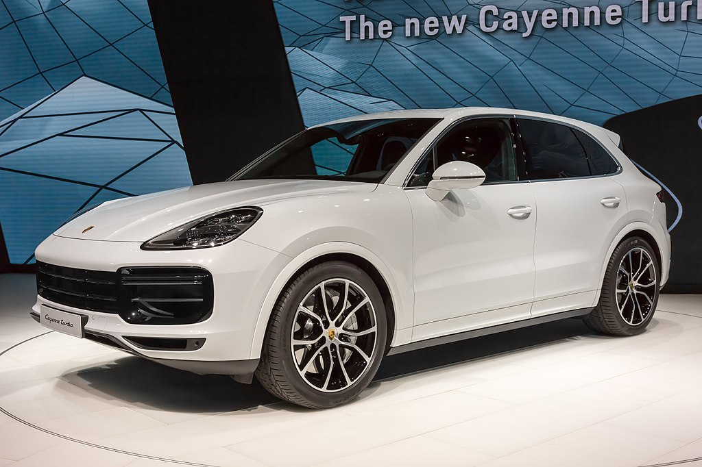

| BMW X5 | |
|---|---|
|
 more images |
The BMW X5 is a mid-size, rear-wheel drive luxury SUV produced by BMW.
The |
| Porsche Cayenne | |
|---|---|
|
 more images |
The Porsche Cayenne is a mid-size luxury crossover sport utility vehicle produced |